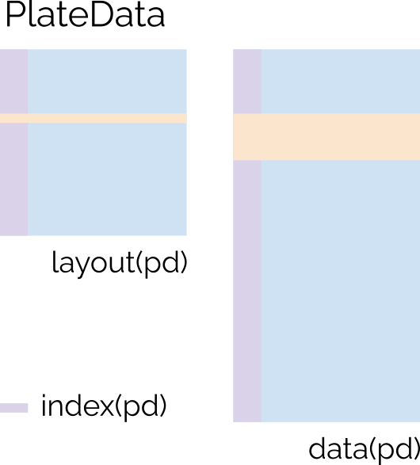

R package for the analysis of microtiter plate-based data. Data must be attributable to a specific well (e.g. A1) in a plate (e.g. P1). The PlateData object stores the layout and data as data.frames connected by an index column. The plate type (e.g. 6-well, 24-well, 96-well is determined automatically and stored as ‘type’).

Installation
There is no official release version yet, since the package is under development.
You can install the development version from GitHub using the remotes package:
remotes::install_github("OliverDietrich/microtiter-plate-analysis-toolkit@main")or the even less stable but more up-to-date
remotes::install_github("OliverDietrich/microtiter-plate-analysis-toolkit@develop")[!WARNING] Early development, no stable features.
ToDo
Working on it, GG
gitcreds::gitcreds_set() # Then enter the freshly generated token
dir.create("/home/gugl/clonedgit/others/PlateData")
usethis::create_from_github(
repo="OliverDietrich/PlateData",
fork = TRUE,
destdir = "/home/gugl/clonedgit/others/PlateData"
)
usethis::use_tidy_github()
#### The following needs to be REDONE for the upstream repo
usethis::use_tidy_github_actions()
# Which repo should we target?
# 1: gunthergl/PlateData = 'origin'
# 2: OliverDietrich/PlateData = 'upstream'
# Selection: 1
usethis::use_github_action("check-standard")
usethis::use_tidy_github_labels()
usethis::use_pkgdown_github_pages()
#### Until here, redo for upstream
usethis::use_author(
given = "Oliver",
family = "Dietrich",
email = "Dietrich.OliverDominik@gmail.com",
role = c("aut", "cre"),
comment = c("ORCID" = "0000-0002-4776-8960")
)
usethis::use_news_md()
lintr::use_lintr(type = "tidyverse")
# Change manually to:
# linters: linters_with_defaults(line_length_linter = line_length_linter(120),indentation_linter = indentation_linter(4)) # see vignette("lintr")
# encoding: "UTF-8"
usethis::use_package("stringr")
usethis::use_package("dplyr")
usethis::use_package("readxl")
usethis::use_package("tidyr")
usethis::use_package("RColorBrewer")
usethis::use_package("ggplot2")
usethis::use_package("methods")
usethis::use_gpl_license()precommit is a wonderful tool to check your code before committing it.
# https://lorenzwalthert.github.io/precommit/articles/precommit.html
# install.packages("precommit")
# bash::$ conda deactivate
# bash::$ pip3 install pre-commit
precommit::install_precommit()
precommit::use_precommit()
# To style all the files with an indent of 4 spaces
styler::style_dir(style = styler::tidyverse_style, indent_by = 4)How to contribute
# Use pre-commits to check your code before committing it
remotes::install_github("lorenzwalthert/precommit")
precommit::install_precommit()
precommit::use_precommit()
# Increase the versions, manually or by using usethis::use_version()
usethis::use_version("minor")
usethis::use_version("dev")
# Add new functionality and document it
# During development, have a clean R environment and run devtools::load_all() to load the current status of the package
devtools::load_all()
# After adding new functionality, run devtools::check() to update the documentation
devtools::check()
devtools::document()
# Vignettes are a great way to document your package
# Add a new vignette by running
usethis::use_vignette("vignette_name")
# Change the vignette in vignettes/vignette_name.Rmd
# Build the vignette by running
devtools::build_vignettes() # This also installs the package- Disable pre-commit for a single commit:
git commit . -m 'quick fix' --no-verify